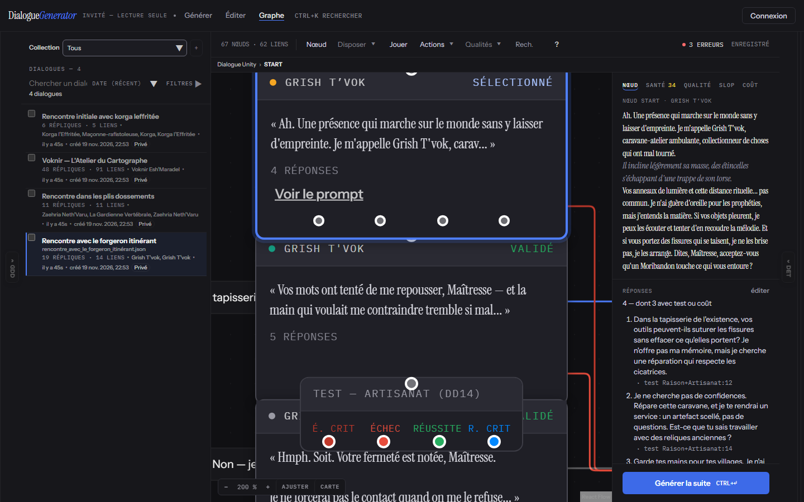
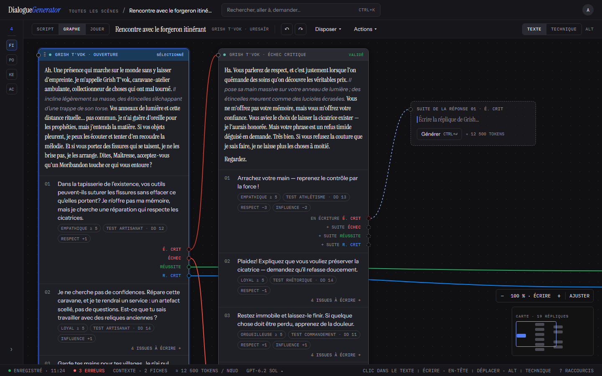
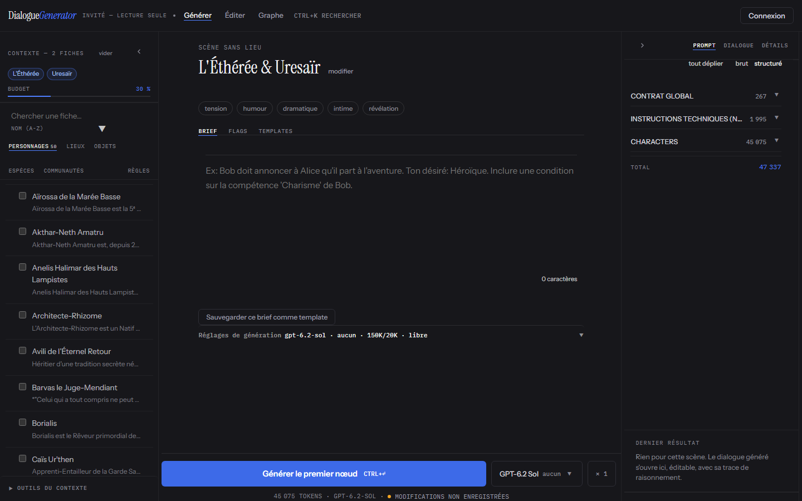
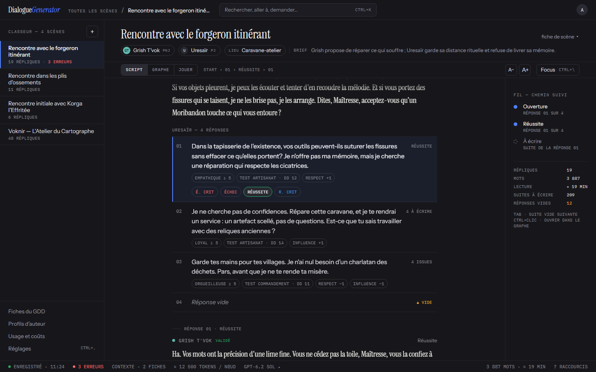

≈ 720 → 1 384 PXde largeur de graphe (mesure de gauche prise sur la capture).
67 NŒUDS → 19 RÉPLIQUESles tests deviennent des sorties de la réponse.
3 SECTIONS → 1 SCÈNEScript, Graphe, Jouer sur le même document.
≥ 3 GESTES → 1 CLICpour corriger une réponse depuis le graphe.